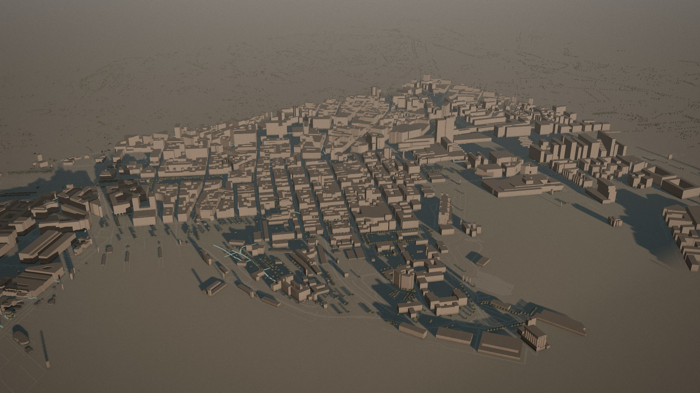
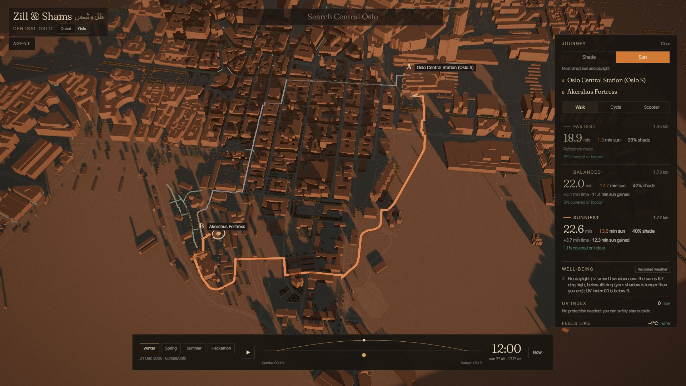
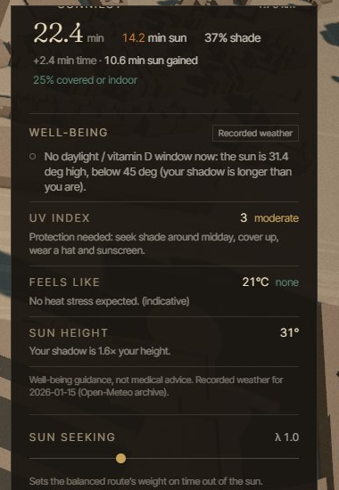

AI Agents Hackathon · American University in Dubai
Zill & Shams
ظل وشمس“shade and sun”
Shade when you need it. Sun when you want it.
An AI agent that plans every walk and ride around the sun.
Shade when you need it. Sun when you want it.
An AI agent that plans every walk and ride around the sun.
of 12,346 adults in an Abu Dhabi study were vitamin D deficient, and another 10% insufficient, in one of the sunniest places on earth.
delivery riders work across Dubai.
international overnight visitors came to Dubai in 2024.
The UAE bans outdoor work in direct sun, 15 June to 15 September, for the 21st year in 2025.
Finds the coolest route: the most shade and the least direct sun, using air-conditioned links such as the Dubai Metro to Dubai Mall walkway.
Finds the sunniest route for people who want more daylight: winter cities, office workers, anyone short on sun.
Same engine. The preference flips.
Works for any city with OpenStreetMap data. Two cities live: Downtown Dubai (8,602 buildings, 7,659 street segments, 744 trees) and central Oslo.
Computed from real map data, not a mock-up. Live at zill.itshamza.me
Model estimate; shade from buildings and mapped trees. Awnings and wind are not modelled yet.
Fastest: 1,101 s in direct sun of 1,435 s. Sunniest: 1,625 s of 1,704 s. Daylight window open: sun 59.9°, UV 8.7.
Fastest: 613 s in direct sun of 1,259 s. Sunniest: 1,288 s of 1,390 s. Daylight window open: sun 51.0°, UV 6.8.
Routes chosen by a documented search over place pairs 400 to 1,500 m apart (data/scenarios/hero.json). Gains are model estimates from the engine, not field measurements.
No city-specific code: open map data in, a shade-aware city out.
Low winter sun: at the December solstice the sun is about 6.6° high, so shadows run about 8.6 times a building’s height. The shadow engine is tested at exactly this angle.


Central Oslo, rendered from the baked city: the sun-mode route in the app, and the long shadows of a winter day in the film.
Oslo’s winter weather is a labelled stand-in (the 2025 solstice). Oslo gets about 5 h 54 min of daylight at the solstice.
Today’s index with its WHO band, from low to extreme, and the matching sun-protection advice.
A band from apparent temperature, labelled indicative.
Open when the sun is high (your shadow is shorter than you), UV is 3 or more and cloud is under 70%.
Hydration and shade-break reminders on long, hot routes.
Well-being and daylight guidance only. It does not diagnose or treat anything. Clinicians are future partners, not a claim we make today.
The sun is about 6° high and UV is near zero (0.1). Sun mode there is about daylight and mood, not vitamin D.

A pluggable provider chain (OpenCode Go, then Voke) with automatic fallback. Until a live key is set, sessions are labelled recorded replays.
| Input | Refresh |
|---|---|
| Sun position | Exact for any minute; within 0.5° of a reference solar model on 20 test samples |
| Shadows | Every 10 minutes, on a 2 m grid |
| Route timing | Departure checked every 5 minutes |
| Weather | Hourly: UV, cloud, sunlight, temperature |
| Map data | Re-baked from OpenStreetMap on demand; a weekly job is planned, not yet running |
Shadow length and direction for boxes at several sun angles, including Oslo’s 6.6° winter sun. 470 automated tests pass (375 backend, 95 frontend).
About 79% of Dubai buildings have no mapped height, so typical heights are used. Trees and awnings are only what is mapped. A passing cloud is not predicted. No field validation yet, so we claim no accuracy percentage.
We aim to align with the UAE PDPL and the GDPR by design. This is an aim, not a certification. No external penetration test yet; it comes before any B2B launch.
| Segment | What they get | How they pay |
|---|---|---|
| Delivery fleetstargets such as Talabat, Deliveroo, Careem | Heat-aware routes and shift pacing for riders | Per rider per monthpricing hypothesis: ~$1 |
| Hotels and tourism boards | “Walk there in the shade, or in the sun” guest concierge | Per hotel per monthpricing hypothesis: ~$99 per property |
| Employers of outdoor workers | Shift planner that respects the midday break | Per site per monthpricing hypothesis: ~$49 |
| Cities and city plannersB2G planning analytics | Where to plant trees or add shade, from the same engine | City licencepricing hypothesis: ~$15,000 per year |
| Schools, elderly care, events, real estate | Shaded routes and outdoor-time planning; shade and sun reports for sites and venues | Per site subscription |
| Corporate well-being and insurers | Daylight-walk programmes for staff | Per employee per yearpricing hypothesis: ~$12 |
Prices shown are our pricing hypotheses, not validated quotes. Consumer premium: ~$2.99 per month, no ads.
No ads, because selling attention would mean selling location.
Keeping location out of any ad pipeline keeps the privacy story clean.
per month: Contabo VPS, 4 vCPU, 8 GB. The VM is shared with other apps, so Zill’s share is a fraction. Total fixed cost about $17 per month with the agent.
per month flat on OpenCode Go: about 3,630 conversations on glm-5.3-flash, about 56 on the strongest model, kimi-k3.
Open data is free. Measured: Dubai data bake 7.5 s, shade bake 487.5 s for four dates. Oslo took about 29 minutes, mostly waiting on Overpass.
of server per 1,000 users: plan price × 0.0003, assuming 20 requests per visit.
delivery riders in Dubai (Dubai RTA)
international overnight visitors in 2024 (Dubai DET via WAM)
| Where | Users | Req/s | p95 | Errors |
|---|---|---|---|---|
| Local machine | 20 | 26.4 | 596 ms | 0 |
| Local machine | 40 | 17.1 | 2.6 s | 0 |
| Live VM | 10 | 10.4 | 1.0 s | 0 |
| Live VM | 20 | 16.9 | 1.6 s | 0 |
One API worker saturates near 26 requests per second on this machine. The live run (capped at 20 concurrent users, 48 s) did not reach its limit, and its latency includes the network round trip. VM: 4 vCPU, 8 GB.
Live prototype at zill.itshamza.me; a pilot with one fleet and one hotel next.
Abu Dhabi, Doha, Riyadh; city planners as the first B2G pilot.
A winter daylight pilot in a city like Oslo or Toronto.
Shade when you need it. Sun when you want it.